Diving into Peopleware
Productive Projects and TeamsMaybe... the major problems of systems work are not so much technical as sociological.
(DeMarco & Lister, 1987)
Jorge Tutor
& Agile Enthusiast
In this session we will talk about:
- Introduction to Peopleware
- Self-organized teams
- Multifunctional teams
- Productivity & waste
- Motivation
- Improvement
Introduction to Peopleware
Make People Awesome
The three core aspects of computer technology are: hardware, software and peopleware.
Peopleware refers to anything that has to do with the role of people including such issues as developer productivity, teamwork, group dynamics, the psychology of programming, project management, organizational factors, human interface design, and human-machine interaction...
The Principles of Scientific Management
(Frederick Taylor, 1911)
Thinkers vs Doers
Functional departments, especialization, hierarchy
Up/Down (Social) | Comunication Issues | Time & Planification (waterfall model)
People are Interchangeable Resources
Are they?
Are we in the same area?
Production vs Development
| Strict & Clear phases, Especialization, One Process | Creativity, Motivation, Invidividual Skills, Communication |
| Requirements → Design → Build → Testing → Release | Open to change, not clear specifications, what does the client need? |
Classic Software Development Mistakes (People)
(McConnell, 1996)
- Undermined Motivation
- Weak personnel
- Uncontrolled problem employees
- Heroics
- Adding pleople to late project
- Noisy, crowded offices
- Friction between developers & customers
- Unrealistic expectations
- Lack of effective project sponsorship
- Lack of stakeholder buy-in
Manifesto for Agile Software Development
On February 11-13, 2001, at The Lodge at Snowbird ski resort in the Wasatch mountains of Utah, seventeen people met to talk, ski, relax, and try to find common ground...
- Individuals and interactions over processes and tools
- Working software over comprehensive documentation
- Customer collaboration over contract negotiation
- Responding to change over following a plan
12 Principles of Agile Software Development
- Our highest priority is to satisfy the customer through early and continuous delivery of valuable software.
- Welcome changing requirements, even late in development. Agile processes harness change for the customer's competitive advantage.
- Deliver working software frequently, from a couple of weeks to a couple of months, with a preference to the shorter timescale.
- Business people and developers must work together daily throughout the project.
- Build projects around motivated individuals. Give them the environment and support they need, and trust them to get the job done.
- The most efficient and effective method of conveying information to and within a development team is face-to-face conversation.
- Working software is the primary measure of progress.
- Agile processes promote sustainable development. The sponsors, developers, and users should be able to maintain a constant pace indefinitely.
- Continuous attention to technical excellence and good design enhances agility.
- Simplicity --the art of maximizing the amount of work not done-- is essential.
- The best architectures, requirements, and designs emerge from self-organizing teams.
- At regular intervals, the team reflects on how to become more effective, then tunes and adjusts its behavior accordingly.
Modern Agile
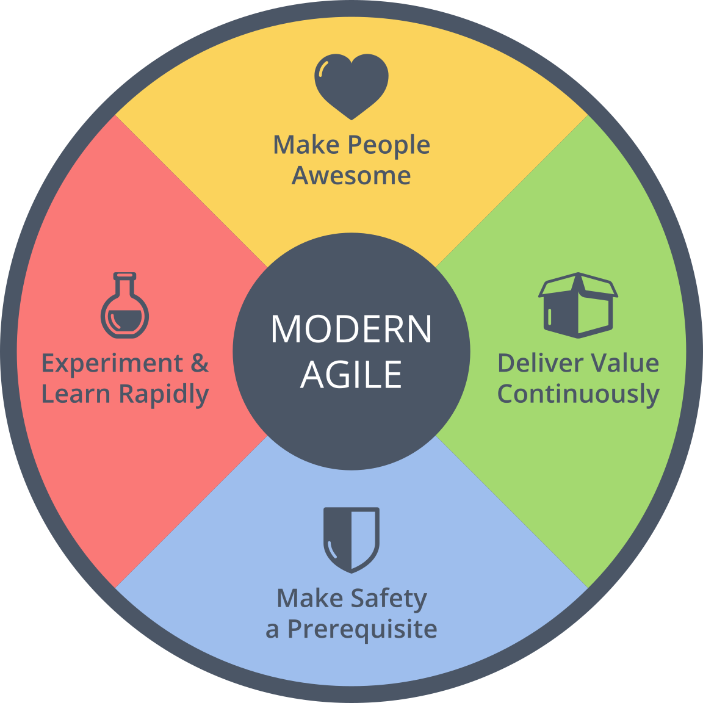What differentiate Great companies
(Collins, 2001)
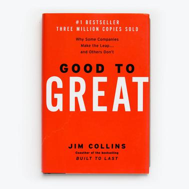| 1 | Ambition & Humility | Us over Me |
| 2 | First Who a then What | The Right People |
| 3 | Confront Grim Reality | Recognize, Face it |
| 4 | Clear strategy | Best Skills, Economy core, Passion |
| 5 | Discipline culture | Spirit, Innovation, Flexibility, Responsability... (Avoiding bureaucracy & hierarchy). |
| 6 | Technology accelerators | Managed by strategy |
| 7 | Constancy | Inertia |
Self-organized teams
The default way of management in nature
Adaptative Complex System
Departments
The Waterfall model
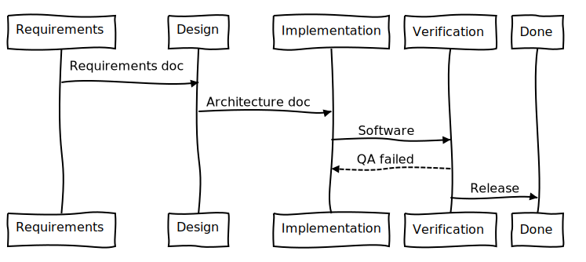The Power of the Team
Adaptative Complex System compound by different agents
Interacted, interconnected, organized (self)
Adapt, compete & colaborate: objetive
Sinergy, different visions (Planning Poker*)
What is a Self-organized team
- Autonomous: distributed control
- Adaptable: adapts & improves
- Responsable: collectively
Scrum teams (Squads)
(Spotify Agile model)
They have end-to-end responsibilities and they work together towards their long-term mission
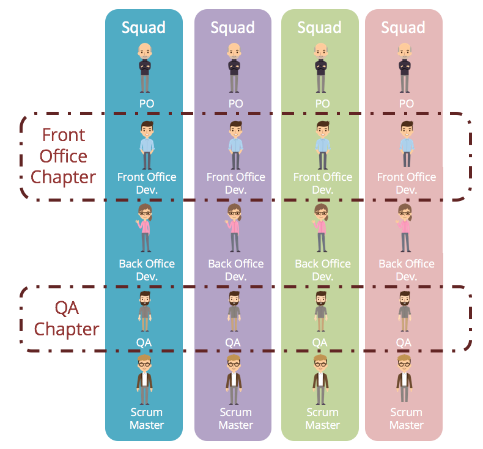Praveen Kumar Purushothaman - My Experience on Spotify Agile Methodology
Little or no standardisation of processes
Don’t have a formal standard, cross-pollination is better than standardization
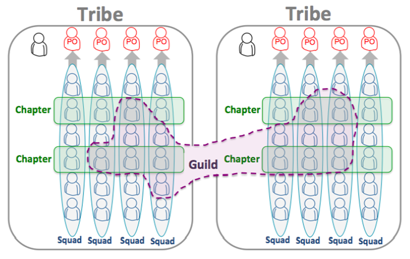Praveen Kumar Purushothaman - My Experience on Spotify Agile Methodology
No Managers ≈ No testers
"But do we need managers anyway, with all these self-steering teams nowadays? Management 3.0 believes management is the responsibility of everyone. It is like software testing... Depending on your organization you maybe need specialized people with a focus on management."
Jurgen Appelo
Leadership Models
Leadership Models: Classic
"Follow my rules, I'm the one who thinks here!"
Strict Control
Leadership Models: The Hero
"Soon or later we will need me (I've ensure that)"
Dependant teams
Leadership Models: Servant
"Oh my lord, what do you need?"
Powerless
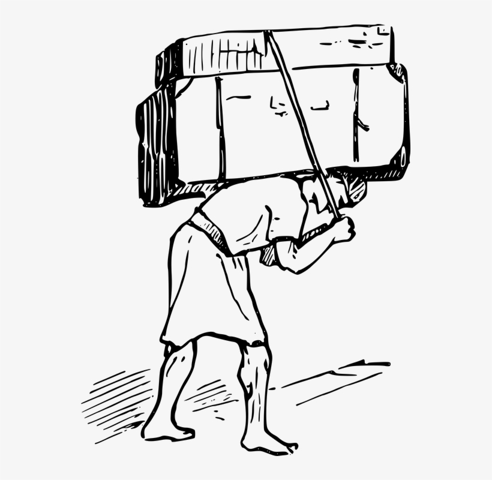Leadership Models: Host & Guests
"Enjoy, have fun, and take responsibility"
Rules, Limits, Actions
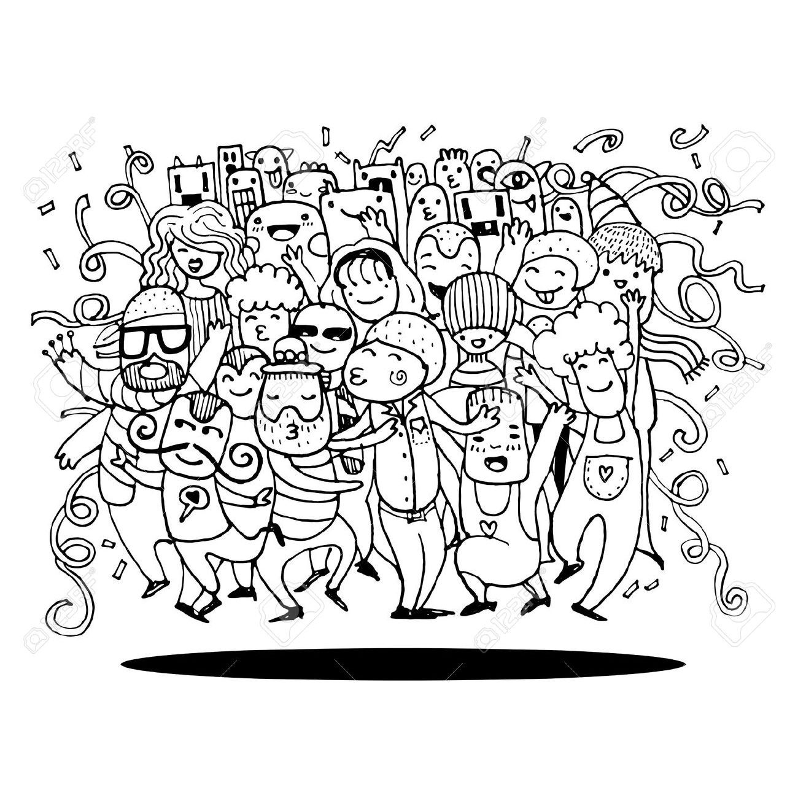The Delegation Board
| Tell | Sell | Consult | Agree | Advise | Inquire | Delegate |
|---|---|---|---|---|---|---|
| manager decission, no explanation | manager decission, try to convince | manager decission, ask first | accord | team decission, ask first | team decission, try to convince | team decission, no explanation |
Alignment & Autonomy
Autonomy with alignment increases motivation, quality and also fast releases.
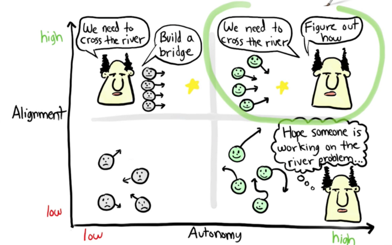Praveen Kumar Purushothaman - My Experience on Spotify Agile Methodology
What is the current stage of my team?
Tribal Leadership - (Logan, King & Fischer-Wright, 2008)
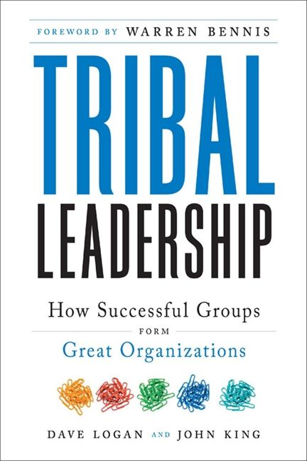| Stage | Mood | Theme |
|---|---|---|
| 1 | Despairing Hostility Hostile, desesperated, violent, survivor |
Life sucks |
| 2 | Apathetic Victim Resigned, sit on your hands, apathetic, demotivated |
My Life sucks |
| 3 | Lone Warrior Competitive, prideful, tapped |
I'm great (and you're not!) |
| 4 | Tribal Pride Agile, Common purpose, High performanced |
We'are great (and they're not!) |
| 5 | Innocent Wonderment Agile, global purpose |
Life is great |
Multifunctional teams
One for all and all for one
The FullStack
Management , Testing , DevOps , Frontend , Backend , Site-Building... What else?
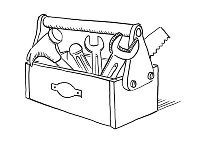
The FullStack Mith
Multifunctional Matrix
| Management | Testing | DevOps | Frontend | Backend | Site-Building | |
|---|---|---|---|---|---|---|
| Daenerys | ✖ | ■ | ■ | ■ | ||
| Jon Snow | ■ | ✖ | ■ | ✖ | ■ | |
| Arya | ✖ | ✖ | ||||
| Cersei | ✖ | ■ | ■ | ■ | ||
| The Hound | ■ | ■ | ✖ | |||
| ☠ | ☠ |
Multifunctional Radar
The Stages of Team Formation
(Tuckman, 1965)
| Stage | Manager | Team | |
|---|---|---|---|
| 1 | Forming | Direct & establish clear objetives | Find your place |
| 2 | Storming | Coach in assetiveness, Resolve conflicts | Improve Relationships |
| 3 | Norming | Step back | Agree own rules |
| 4 | Performing | Delegate | Take responsibility |
| * | Adjouring | Celebrate & Iterate | Celebrate & Iterate |
Team vs Project oriented
Productivity & Waste
More hours ≠ more work done
What is Productivity?
Work (properly) Done / Effort & Resources
How shouldn't we measure Productivity?
- Lines of Code
- Commits
- Hours
How shouldn't we increase Productivity?
- Working more hours
- Adding more people to the project
- Making others work harder (not smarter)
Crunch Mode
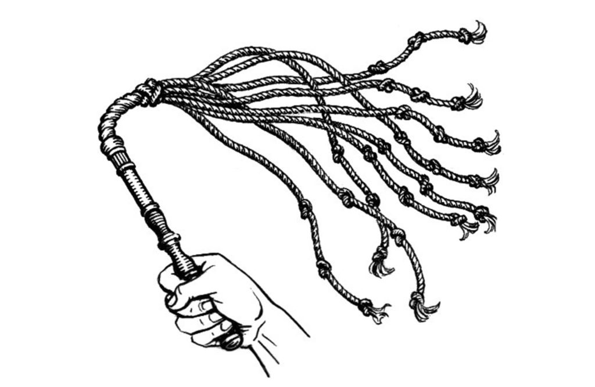Motivation: no one leaves the office before the boss does
Productivity: number of hours in front of your desktop, lines of code
Incidences/Bugs: the team is not doing their work properly
Why Crunch Mode Doesn’t Work: 6 Lessons
(Evan Robinson, 2008)
- Productivity varies over the course of the workday, with the greatest productivity occurring in the first four to six hours. After enough hours, productivity approaches zero; eventually it becomes negative.
- Productivity is hard to quantify for knowledge workers.
- Five-day weeks of eight-hour days maximize long-term output in every industry that has been studied over the past century. What makes us think that our industry is somehow exempt from this rule?
- At 60 hours per week, the loss of productivity caused by working longer hours overwhelms the extra hours worked within a couple of months.
- Continuous work reduces cognitive function 25% for every 24 hours. Multiple consecutive overnighters have a severe cumulative effect.
- Error rates climb with hours worked and especially with loss of sleep . Eventually the odds catch up with you, and catastrophe occurs. When schedules are tight and budgets are big, is this a risk you can really afford to take?
Increase productivity by removing Waste
Waste: Superflous documentation
Unmaintained, nobody will read it.
Waste: Neverending meetings
No Agenda, No Goals, No Actions
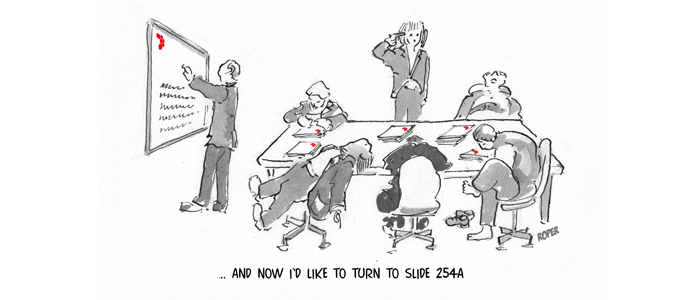Waste: Unused features
Resources are limited.
Waste: Unreasonable Bureaucracy
Kills entrepreneurial spirit: creativity, flexibility, initiative, teamwork, self-confidence, and critical thinking.
Same approach, Same results
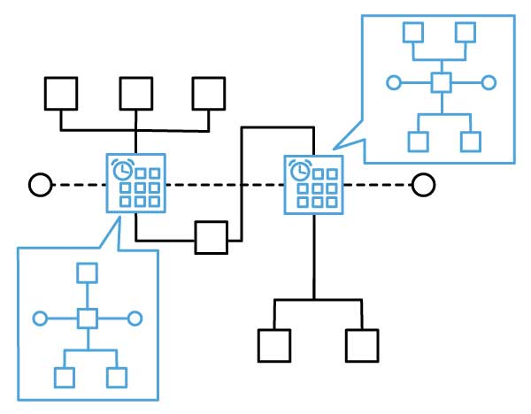Waste: Interruptions / Context switching
Waste: Low quality code
Waste: Oversized teams (Communication)
Productivity Actions
Team Productivity: Swarming
One piece continuous flow.
Kanban: WIP (work in progress) limit.
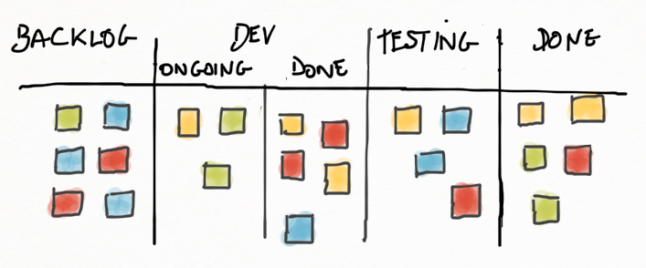Team Productivity: King & Servants (Swarming)
(Kinberg, 2007)
- Anyone working on the top priority story is King.
- Everyone else on the team is a Servant.
- You want to be King. Try to find ways to help out with the top priority story.
- Whenever a King needs help, Servants immediately offer their services.
- A Servant may not disrupt a King.
- A Servant may never check in unreleasable code on the work branch. A King may check in whatever he pleases (as long as he doesn't violate a branch policy of course).
- As soon as the top priority story is Done, anyone working on the next story is now King.
Team Productivity: TimeBoxing
- Meetings
- User Stories / Tasks
Self Productivity: Pomodoro Technique
(Francesco Cirillo, 1980s)
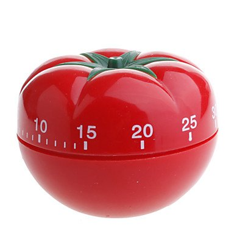Work per intervals of 25 minutes (focused) + 5 min relax
Self Productivity: Gettings Things Done (GTD)
(David Allen, 2001)
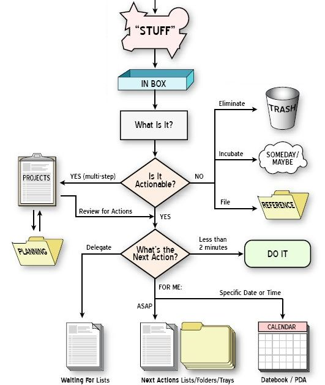Motivation
The Eye of the Tiger
The Human Side of Enterprise
(McGregor, 1957)
| The X Theory | The Y Theory |
|---|---|
| Passive, Avoid Responsability, Need to be Managed, No Ambition | Responsable, Participative, Self-Management |
| Persuade, Reward, Punish, Control | Delegate, Decentralize, Trust, Facilitate, Evaluate |
The Maslow Pyramid
Salary → Environment → Relationships → Self-Esteem* → Reputation*...
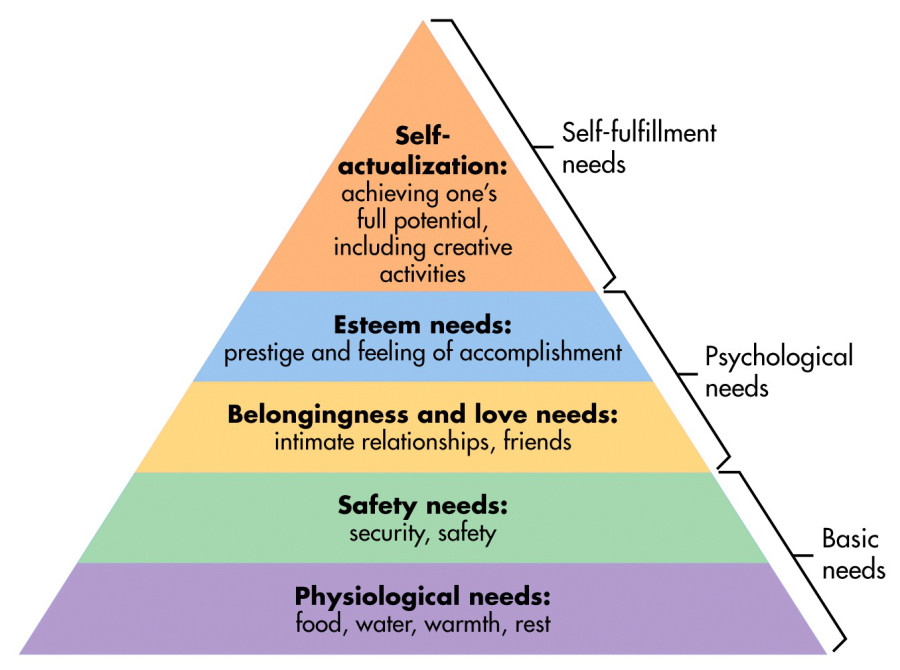
Why we do what we do?
| Extrinsic | Intrinsic |
|---|---|
| Punishment & Rewards | Mission Fulfillment |
| Because of the outcome that will result by doing the task | Because ot the interest and enjoyment in the task itself |
| Promotions, Pay raises, Bonuses, Benefits, Prizes, Winning, Perks | Enjoyment, Purpose, Growth, Curiosity, Passion, Self-expression, Fun |
The overjustfication effect
Six Rules for Rewards
(Jurgen Appelo, 2011)
- Don’t promise rewards in advance.
Give rewards at unexpected times so that people don’t change their intentions and focus on the reward.
- Keep anticipated rewards small.
You cannot always prevent people from anticipating rewards. But this may be harmless when the rewards are small.
- Reward continuously, not just once.
Every day can be a day to celebrate something. Every day is an opportunity for a reward.
- Reward publicly, not privately.
Everyone should know what work is appreciated and why. A regular public reminder works better than a private one.
- Reward behaviors, not only outcomes.
Outcomes can often be achieved through shortcuts while behavior is about hard work and effort.
- Reward peers, not only subordinates.
Peers often know better than managers which of their colleagues deserve a compliment.
What motivates you?
- Knowledge
- Freedom
- Honor
- Status
- Relationships
- Order
- Objetive
Kudo Box
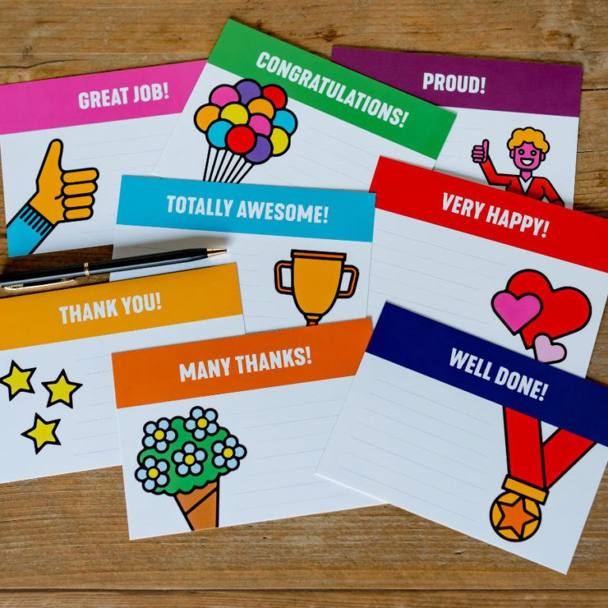Niko-Niko Calendar
Ask the Team
One 2 One Meetings
- OPEN - What's on your mind?
- SELF ESTEEM - What is your biggest accomplishment this month?
- CHALLENGE - What’s your biggest challenge right now?
- FOCUS - What do you want?
- IMPROVE - What things should we do differently? What processes can we improve?
- RESOURCES - What resources would be helpful to you right now?
- HELP - Is there anything I can help you with?
Team Identity
Team Name (not team project name)
- What make us special?
- What do we want to remember?
- What do represent us?
Team Gamification
Our team fight against Zombies, Orcs & Dragons
Improvement
Kaizen (改善) - change for better

"If it works do not change it!"
someone will do it better soon or later...
Safe Environment for Failure
Company Culture, CI Tools
The Agile Cicle
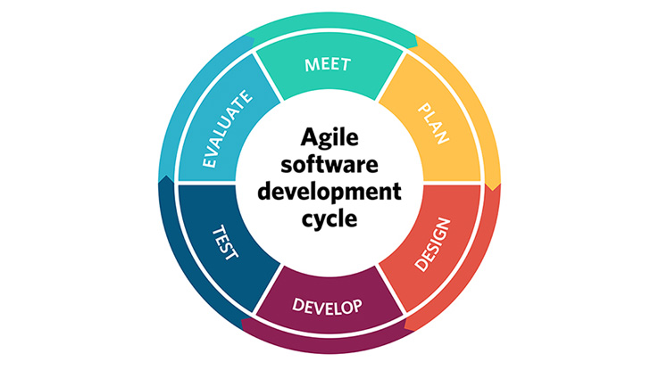Retrospectives
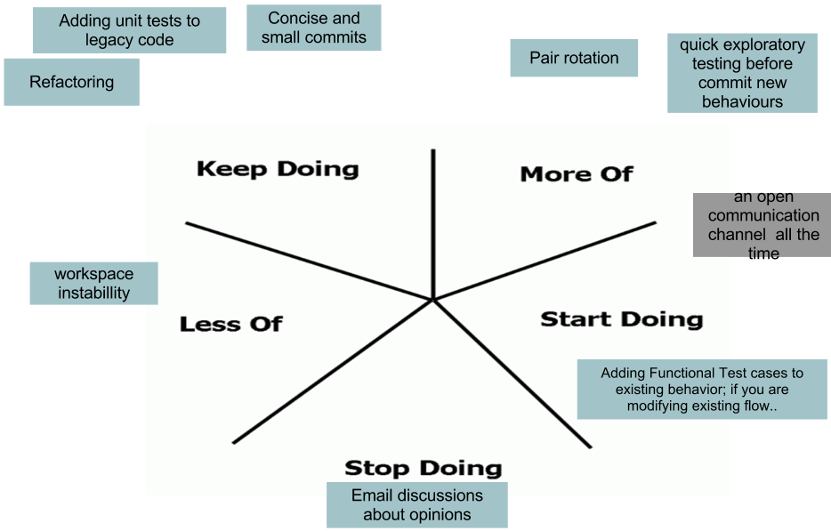Conclusions
- Think & Do
- People are not Interchangeable pieces
- Invest in a Healty/enjoyable environment
- Have rules at the start and later break them (adapt according to the team’s needs).
- Coach the team through the process
- Take risks & Evolve!